23 Must-haves for an RV Outdoor Kitchen
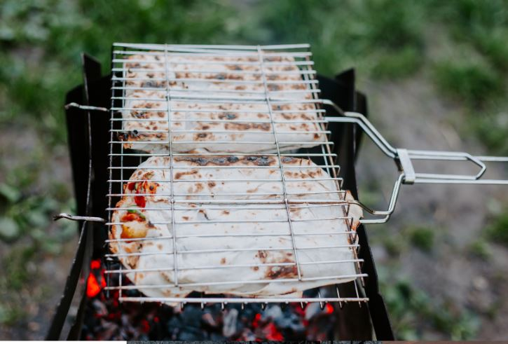Rvs have been getting more and more luxurious over the past couple years. More and more rvs are being equipped with outdoor kitchens. Why? To keep indoor activities outdoors, of course! The outdoor kitchen is a great addition to any RV because it can provide you with the pleasure of outdoor cooking and eating as well as prolonging outdoor recreation longer into the day.
A basic outdoor kitchen will include an outdoor grill [can be a propane or charcoal] , outdoor sink, outdoor table, among Other things. In this article, i will be giving a full description of how an outdoor kitchen should look and what it should have.
Outdoor Grill
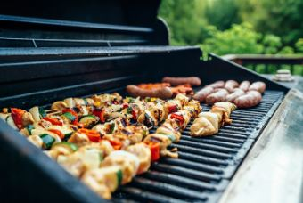The outdoor grill is an obvious must-have for the outdoor kitchen in any RV. It will save on your propane bill by cooking outside as well as enable you to be able to cook outdoors when there isn't room inside. A grill is perfect for anyone who wants to cook out back, but may have limited space and doesn't want to give up outdoor entertainment.
Types of outdoor grills: If you are buying your outdoor grill for an outdoor kitchen in your RV, there are a few things that I highly recommend keeping into consideration before making any purchases. One is the size and price of the grill. The size of the grill should never be bothersome to store in your rv. Another thing to consider is the price. You do not have to purchase the most fancy or expensive grill to enjoy cooking outdoors. Keep it simple.
Kettle/Pots
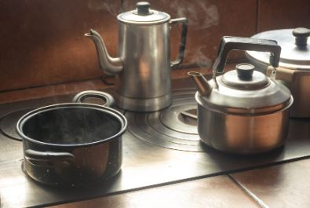These allow you to quickly prepare a meal or tea. Just like how you have them indoors, they will fit quite well outdoors.
Countertop Ice Maker
A countertop ice maker will always be needed in your outdoor kitchen. I don't know about you, but I hate paying for ice at the campground. An outdoor kitchen can be a lifesaver with this outdoor camper's best friend. Designed to fit on any countertop and draw less than 1A at 120 volts, this outdoor ice maker produces up to 26 lbs of ice.
Having one of these will have family members cool in a minute without needing to run inside for ice.
Tools for measuring
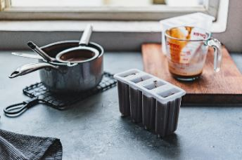Just like in any regular kitchen, you need to have measuring tools. I know it's outdoor cooking, but you will still need to measure portions for your guests and look into certain recipes that require accuracy in estimating the amount of food needed for each person. Just because it is cooking outside, doesn't mean you will start using stick or leaves for cooking.
Cutting Board
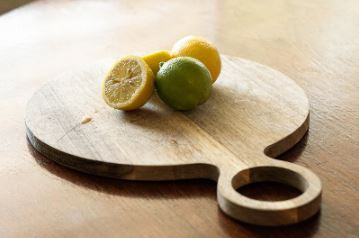A cutting board is good to have anywhere you will be preparing food. You can use it in the kitchen, outdoor kitchen or bar. It's all about keeping your food safe and sanitary at all times.
Cooking Utensils
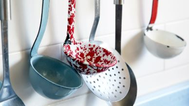You will want non-stick utensils for outdoor cooking so you don't scratch the surface of your grill or outdoor set up. Spatulas are good to have as well for flipping grilled foods without destroying those big juicy burgers!
Measurements Equivalents Chart
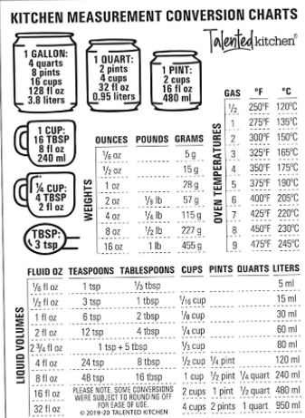A chart like this makes is easy! It gives measurements for dry and liquid ingredients, conversions from cups into ounces and other measures such as how many tablespoons are in one cup. This can be a really useful tool when performing outdoor kitchen activities plus, if you print this out on waterproof paper, it gets even better.
Tables
Tables will allow you to place items down in an orderly fashion. You can display ingredients, outdoor kitchen tools and other cool outdoor cooking items that are used for mastering outdoor kitchen activities.
Masking Tape or Painters' Tape
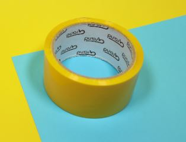This is great to have on hand because you'll be sure not to leave residue marks on your patio or outdoor surface where the outdoor kitchen is located. This can also be a lifesaver if you've got dirt or grime when working with doughs, pastes and troweling certain types of textures onto ceramics and concrete surfaces.
Lamp (Might Be Optional)
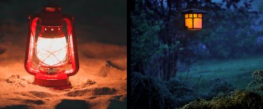If placement of the outdoor kitchen area is near light fixtures then consider using one so you don't strain yourself by using flashlights while trying to prepare tasty meals.
Aluminum Foil Paper
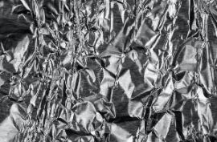Aluminum foil paper has so many uses. It 's great for placing on outdoor surfaces to keep food from sticking. It's also nice when using it as an insulator for hot pans to keep the heat inside so your outdoor kitchen is kept at a comfortable temperature.
Contact Cement
Just like painters' tape, this can be used to adhere items (like tile and stonework) onto outdoor surfaces without having residue marks left behind.
Extension Cord (Might Be Optional)
Consider getting one of these if you think that you'll need one because who really wants to work with electricity by extension cord? On that same note, make sure you're careful around outdoor kitchens since they are usually placed near water sources which means electrical connections might be affected.
Bubble Wrap
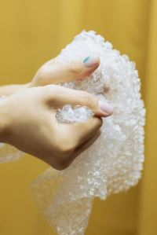Bubble wrap can be used to cover outdoor kitchen appliances like the refrigerator, grill and outdoor sink faucet or plumbing. You can even use it to cover outdoor furniture like outdoor tables too.
Behind The Sink Faucet Plumbing Parts (Optional)
Depending on what type of sink faucet you have, consider getting spare parts just in case they need replacement. Some outdoor kitchen sinks are custom made and if something gets damaged, then it best to have the custom part on-hand.
Utensils for eating
What would eating be like if you don't have outdoor utensils? Just think of how difficult it will be to eat in an outdoor kitchen if you don't have outdoor eating utensils.
Facial Towel ( Might Be Optional)
A facial towel is small and easy to carry around so it's great for outdoor kitchens. This outdoor kitchen accessory is used to wipe dirt, sweat, and grease from the face and hands.
Don't Forget The Paper Towels!
Paper towels will help you in so many ways. It's something you should always have in your rv outdoor kitchen.
Multi-Tool (Optional)
You might want a multi tool with you while you're cooking outdoors as well especially if your rv outdoor kitchen has something that needs fixing or replacing during mealtime.
Kettle/Pot Holder (Might Be Optional)
The kettle holder, pot holder is important because you'll need this when your cooking food in a pot and you need to grab the lid with your bare hands but don't want yourself getting burnt.
Pot Lifter (Might Be Optional)
For a rv outdoor kitchen, a pot lifter will save you the time of going to grab a cloth or something to place the hot pot on. The lifter will keep you from getting burnt as well.
Mini Refrigerator
You can use a mini refrigerator to store food items like fruits, veggies and other essentials you might need while outdoor cooking. A mini refrigerator is also very affordable if you are on a budget.
Chairs
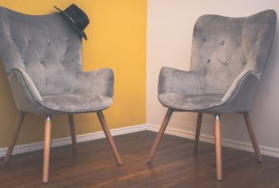While outdoors, you will always at some point need to sit. Chairs will be your outdoor kitchen's outdoor chairs. In a rv outdoor kitchen you need to have at least 2 or 3 tables, so that you
Can you add an outdoor kitchen to an rv?
Yes you can, but it would be a little bit costly. On average, the outdoor kitchen can cost anywhere from $3,000 to $20,000 to install depending on its size and how many amenities it will have. You can go a little bit more expensive, but don't go too overboard because you would probably be wasting money. If you plan on doing it yourself, you could save a lot of money.
Imagine being outdoor with your family or friends while being able to stop for a moment to go flip burgers on your grill. Now that would be nice, right? If you plan on using your outdoor kitchen a lot then it wouldn't hurt getting outdoor furniture because outdoor furniture is less expensive than regular wooden ones.
Conclusion
You learned about some of the most important things to have while you are in your outdoor rv kitchen. You also learned that outdoor kitchens are a great addition to your outdoor space. And with the items mentioned above, you will be able to create a beautiful little area outdoors for the family to sit and have a meal.